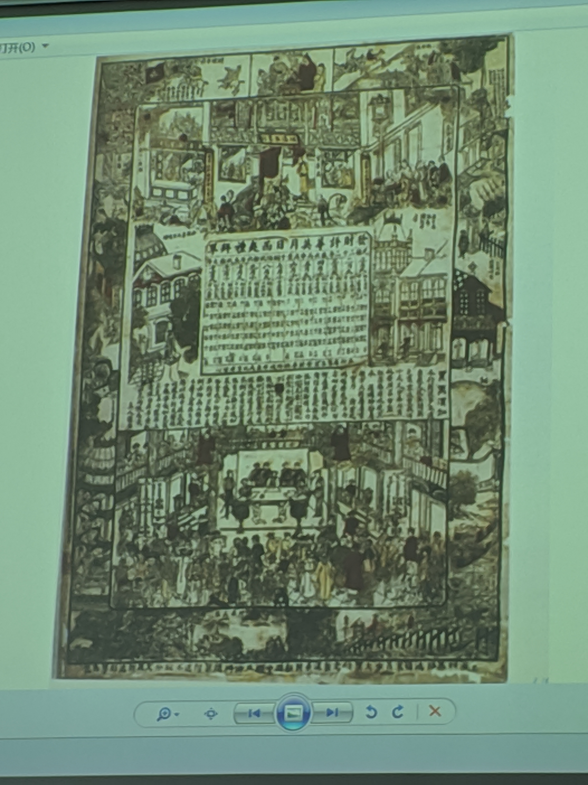

清末：时事画报
1、《点时斋画报》（1884-1898）
历时15年 4000多幅画
配合新闻；注重时事；图文互释
西学东渐的标志性事件
1、开启了图文并茂因而可能雅俗共赏的“画报”体式，是传播新知的途径，又是体现平民趣味的场所。
2、兼及美术与新闻。
要点：
是中国近代史上最早的画报
4000多幅作品反映时事
由吴友如主编
时事画报 民国初期
1911年的《时事新报》《民主画报》
1912年的《真相画报》
1925年前后《上海画报》
月份牌，缘起，和画家
1、实际上是为推销商品所作的广告宣传画
2、五四前后 ，月份牌为吸引外国买主，采用传统内容。
三个时代
周幕桥
郑曼陀
杭稚英
李幕白、金雪尘二人称为杭稚英画室的中坚力量
从回回图到连环画
刘伯良《薛仁贵征东》：第一部图文分离，并把文字置于画面上端，从而形成连环画图文版式基本格局的小开本联欢画书。
漫画
早期的漫画在辛亥革命以前就出现了。
一种具有强烈的讽刺性或幽默性的绘画，从政治事件中取材。
中国古代有没有漫画
丰子恺 1925年 “子恺漫画”在《文学周报》发表
1904年，上海《警钟日报》上就有时事漫画专栏
清末民初重要的漫画家，时事漫画和“泼克”
沈伯尘《上海泼克》1918年9月创刊
上海美专教授张聿光
民初书风
尊碑抑帖
清末阮元“南北书派论”
包世臣《艺舟双楫》
赵之谦
康有为《广艺舟双辑》
民初四大书家
沈曾植、吴昌硕、李瑞清、曾熙

💬